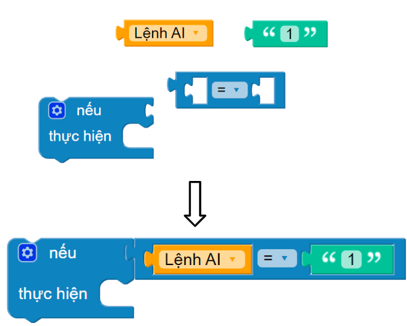
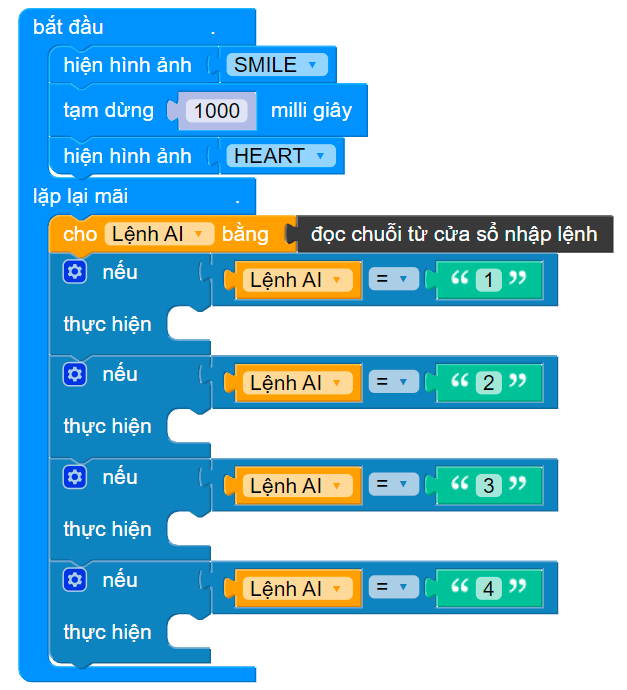

20. Bài 16: Lập trình AI - Điều khiển bằng giọng nói
Mục tiêu
Làm quen với khái niệm trí tuệ nhân tạo (AI) và công nghệ nhận dạng giọng nói
Ứng dụng lập trình nhận dạng giọng nói.

Giới thiệu về AI
Trí thông minh nhân tạo AI là công nghệ mô phỏng những suy nghĩ, quá trình tiếp thu kiến thức của con người cho máy móc
Có khả năng nhận dạng và chuyển đổi giọng nói của con người thành văn bản để xử lý

Các ứng dụng của nhận dạng giọng nói:
Môi trường lập trình trên OhStem App
Trong giao diện chính của OhStem App, chúng ta chọn tiếp vào phần Lập trình AI, như hướng dẫn ở hình sau đây:
Giao diện lập trình kéo thả sau đây sẽ hiện ra, với khối lệnh đặt trưng bắt đầu …lặp mãi mãi cho các ứng dụng của chúng ta.
Giới thiệu khối lệnh
Khối lệnh nhận dạng giọng nói: Bật chức năng chuyển đổi giọng nói thành văn bản (Text to speech - TTS).
Khối lệnh so sánh kết quả nhận nhận diện giọng nói với các từ được nhập vào
Khối lệnh đọc kết quả nhận diện giọng nói
Nhận dạng giọng nói và in kết quả ra màn hình:

{kind=link}
{kind=link}
{kind=link}
{kind=link}
{kind=link}
{kind=link}
{kind=link}
{kind=link}
{kind=link}
Điều khiển robot bằng giọng nói
Phần 1: Gửi lệnh cho Robot
Lập trình để nhận dạng giọng nói và gửi lệnh đến robot
Xây dựng câu lệnh bắt từ khóa

Khi bắt được từ lệnh đi thẳng, chúng ta sẽ gửi một mã lệnh tới mạch Yolo:Bit đang kết nối, là số 1 cho đơn giản. Câu lệnh để bắt từ khóa (kết quả có chứa) nằm trong nhóm GIỌNG NÓI. Câu lệnh gửi 1 tới thiết bị đang kết nối nằm trong nhóm GIAO TIẾP.
Hoàn thiện chương trình nhận dạng giọng nói
Tiếp tục nhân bản toàn bộ câu lệnh ở bước trên, và ghép nó vào vị trí thích hợp để hoàn thiện chương trình như sau:

Phần 2: Robot nhận lệnh
Lập trình để robot hoạt động theo lệnh nhận được
Chuyển sang giao diện Lập trình thiết bị
Bắt đầu với một vài hiệu ứng trước khi vào khối lặp lại mãi mãi, như sau:
Khai báo biến Lệnh AI để đọc và lưu lại lệnh được gửi tới robot.
Đọc lệnh AI từ cửa sổ nhập lệnh. Liên tục đọc lệnh do chương trình AI gửi tới ở cửa sổ nhập lệnh


Xây dựng phép so sánh chuỗi

Nhân bản câu lệnh so sánh chuỗi và ghép nối lại chương trình để có được cấu trúc chương trình như sau:
Hoàn thiện chương trình bằng ghép nối cái câu lệnh di chuyển tương ứng.

{kind=link}
{kind=link}
{kind=link}
{kind=link}
{kind=link}
Lưu chương trình vào Yolo:Bit
Sau khi biên soạn chương trình xong, chương trình cần được lưu cố định vào Yolo:Bit. Điều này sẽ rất cần thiết cho việc kết nối ổn định giữa xBot và chương trình AI về sau.
Lưu chương trình vào Yolo:Bit Rover
Reset lại Yolo:Bit
Mở chương trình AI, kết nối với Yolo:Bit Rover
Chạy chương trình AI
{kind=link}
Chương trình mẫu
Điều khiển robot bằng giọng nói: Tại đây
{kind=link}